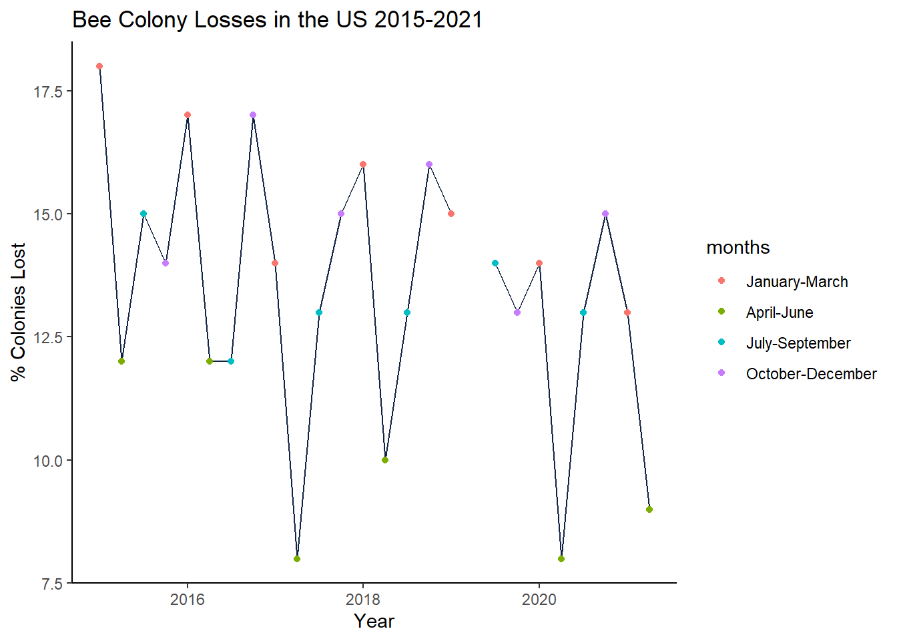
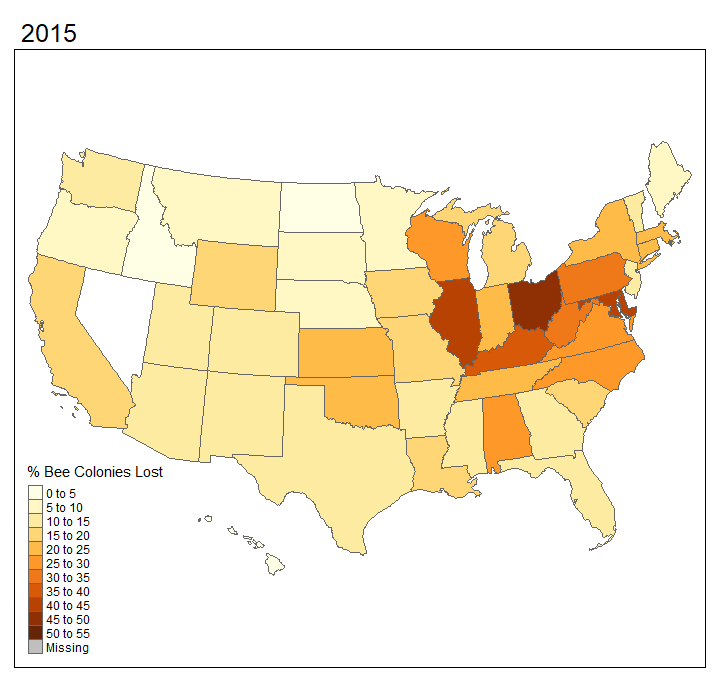
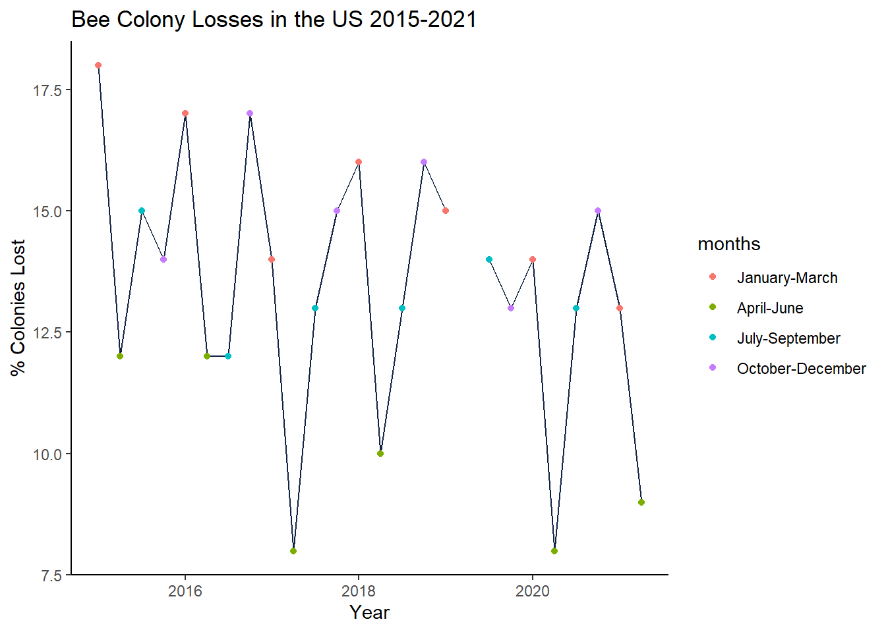
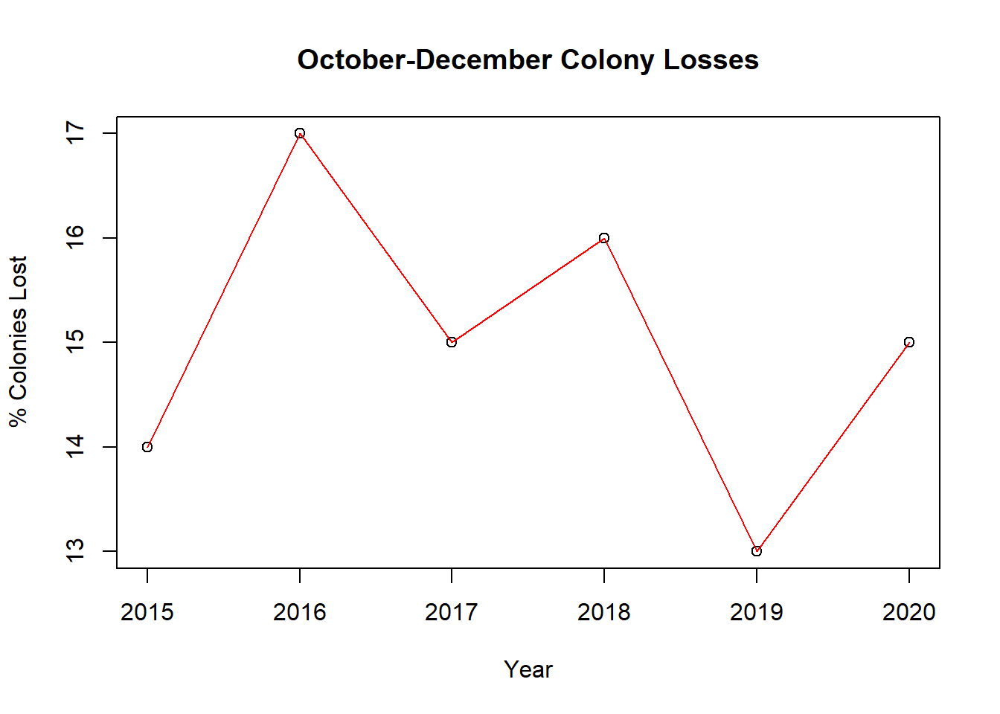
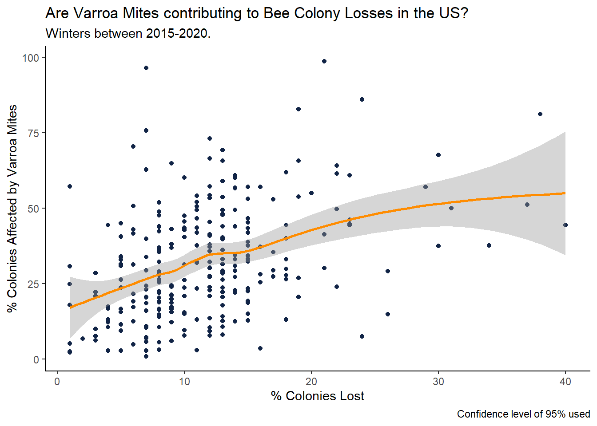
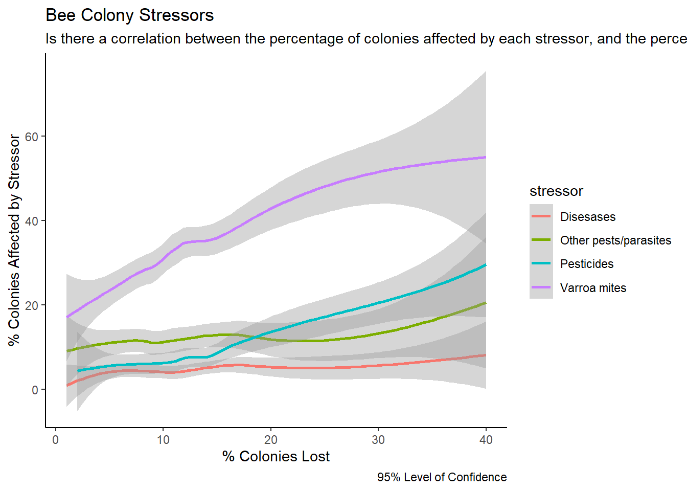

Warning: Removed 1 row containing missing values or values outside the scale range
(`geom_point()`).
Honeybees (Apis mellifera) are known for living in hives and producing honey. They also play an essential role in the environment, pollinating a wide range of plants. The survival of many ecosystems is dependent on them, particularly in agriculture. From 2005, beekeepers began reporting a reduction in numbers of colonies which is of great concern. Here, we examine data on bee colony losses in the US between 2015-2021 and the stressors that might be contributing to this.

As the above map shows, the US is no exception to the global trend of declining bee population. Data from 2015-2021 shows that despite fluctuations, it was still a widespread phenomenon affecting the whole country. The reason for such fluctuations between states is, in part, due to being transported by beekeepers to forage in other parts of the country (Bond, et al., 2021). This is especially true of the commercial industry where beekeepers travel to meet pollination needs of crop growers (Bond, et al., 2021). Nevertheless, we can still see that many states were experiencing losses of over 20% of their bee colonies. This is higher than the average figure previously considered acceptable by beekeepers – 17.8% (Steinhauer, et al., 2021).
The map uses data from the end of Winter for each year (January-March). However, bee colony populations vary throughout the year. According to the Bee Informed Partnership, the winter period between 2019-2020 was the second lowest on record (BIP, 2020) which would have been positive news if not for the fact that this followed a summer with one of the highest numbers of losses (BIP, 2020).
Warning: Removed 1 row containing missing values or values outside the scale range
(`geom_point()`).
TidyTuesday’s data for March-June was missing, so we cannot see how significant the losses were, but a substantial drop can be seen in early 2020. Honing in on only data from October-December, the following chart confirms that the winter period at the end of 2019 was one of the lowest for bee colony losses for that time of year. This is in line with the findings reported by the Bee Informed Partnership.

So far two things are clear. A concerning amount of bee colonies are being lost. Winters are a period when the percentage lost is at the highest. What isn’t yet clear are the whys. Why is this an important issue? And why is it happening?
The answer to this first question is that Apis mellifera provide an immense number of ecosystem services. This means that the work they do, particularly the pollination of plants, delivers many benefits to the natural environment which have a positive impact on our own lives and wellbeing.
1) Most plants require pollinators to grow successfully in order to maintain healthy and stable ecosystems (Stein, et al., 2017). This also means that bees play an important role in agriculture (Quigley, et al., 2019). Even self-pollinating crops like strawberries produce a significantly better yield (both in quality and quantity) when pollinated by insects such as bees (Klatt, et al., 2014). Therefore we, along with many other species, depend on them to feed ourselves. There is already an area in China where farmers have to pollinate crops by hand, due to a lack of pollinators (Ren et al, 2018). This is not a sustainable way to feed a growing global population.
2) There are even more provisions we get from honey bees directly. These include non-edible goods like beeswax (which has many uses - candles, cosmetics and polishes to name just a few) and propolis (which is utilised in some medicines and cancer treatments). In addition, we obtain more food sources from them like royal jelly, and of course honey (Abban, et al., 2024) (Bond, et al., 2021).
Furthermore, honey bees are intricate creatures, and are highly sensitive to changes in the environment. For example, increased pollution levels interfere with their cognitive functions and navigation systems which, in turn puts a strain on their health and size of the populations (Leonard, et al., 2019). Therefore, in the modern world where environmental protection is of growing concern, the abundance (or lack of) healthy honey bee colonies is a potential indicator of the state of the environment.
Now let us consider the second question: what is causing the decline in bee colonies? Unfortunately, air pollution is just one of many factors that puts a strain on honey bees. There are several other stressors:
Warning: Ignoring 6 observationsFarmers use pesticides to prevent losing crops to insects and parasites. Many of these agrochemicals are detrimental to bees too; particularly neonicotinoids (Woodcock, et al., 2017).
But it is not just crops that are targeted by pests. Bee colonies are also targeted by pest species, particularly parasites. Honey bees are very hygienic creatures and each colony consists of workers dedicated to cleaning the brood by removing dead or infected cells (Bigio, et al., 2013), but they are still prone to diseases.
However, as the above graph shows, the biggest culprit is the varroa mite. This species is a parasite that not only feeds on bees, but also carries diseases that can spread through the population within a colony (Abban, et al., 2024). In particular, varroosis is a disease that causes devastation within bee populations. (Abban et al., 2024).
`geom_smooth()` using method = 'loess' and formula = 'y ~ x'Warning: Removed 1 row containing non-finite outside the scale range
(`stat_smooth()`).Warning: Removed 1 row containing missing values or values outside the scale range
(`geom_point()`).
At first glance we can see a very slight correlation which could suggest that the more colonies are lost, the more likely there will be varroa mites behind it. This is because when there was a higher percentage of colonies lost, the percentage of those infested by varroa mites was also higher. For example, when there were >25% of colonies being lost, the percentage of varroa mite stress was also mostly above 25%. However, at the lower end, the data was much more dispersed. Whilst there were many areas with a lower proportion of varroa mite related bee stress that also had a relatively low percentage of colonies lost, there were also several cases of a high varroa mite prevalence, with a relatively low loss rate. Here it seems that varroa mites are not the sole culprit.
`geom_smooth()` using method = 'loess' and formula = 'y ~ x'Warning: Removed 101 rows containing non-finite outside the scale range
(`stat_smooth()`).
Now we can see that there is a very slight correlation in all four of these stressors. Once again, it is obvious that varroa mites affect a significantly higher percentage of bee colonies than any other stress factors.
We have seen that the loss of bee colonies has been an issue in the US. In spite of fluctuations in numbers, the percentage of colonies being lost was consistently higher than the figure (once 17.8%) deemed acceptable by beekeepers. The prevalence of four bee stressors was examined, and varroa mites were found to impact on the highest percentage of colonies. However, the trend between colonies lost and colonies affected by these parasites was not strong enough to form a solid conclusion. More data on this and the other stressors (diseases, pesticides and other pests) will need to be collected. It might be helpful to include pollution levels in future data collection too.
References
Abban, S., Smith, B., Corona, M. et al. Prevalence and distribution of Varroa destructor and Nosema spp. in symptomatic honey bee colonies across the USA from 2015 to 2022. Sci Rep 14, 1726 (2024).
Bigio G, Schürch R, Ratnieks FL. Hygienic behavior in honey bees (Hymenoptera: Apidae): effects of brood, food, and time of the year. J Econ Entomol. 2013 Dec;106(6):2280-5
BIP, 2020. Preliminary Results of the 2019-2020 National Honey Bee Colony Loss Survey. [Online]
Available at: https://beeinformed.org/2020/06/22/preliminary-results-of-the-2019-2020-national-honey-bee-colony-loss-survey/
[Accessed 6 December 2024].
Bond, Jennifer K., Claudia Hitaj, David Smith, Kevin Hunt, Agnes Perez, and Gustavo Ferreira. June 2021. Honey Bees on the Move: From Pollination to Honey Production and Back, ERR-290, U.S. Department of Agriculture, Economic Research Service.
Klatt, B. K. et al. (2014) ‘Bee pollination improves crop quality, shelf life and commercial value’, Proceedings of the Royal Society B: Biological Sciences. Royal Society, 281(1775). doi: 10.1098/rspb.2013.2440.
Quigley, T.P., Amdam, G.V. and Harwood, G.H. (2019) ‘Honey bees as bioindicators of changing global agricultural landscapes’, Current Opinion in Insect Science, 35, pp. 132–137 Available at: https://doi.org/10.1016/j.cois.2019.08.012.
R. J. Leonard, V. Vergoz, N. Proschogo, C. McArthur, and D. F. Hochuli, “Petrol exhaust pollution impairs honey bee learning and memory,” Oikos, vol. 128, no. 2, pp. 264–273, Jan. 2019
Ren, Z., Zhao, Y., Liang, H., Tao, Z., Tang, H., Zhang, H. and Wang, H. (2018) ‘Pollination ecology in China from 1977 to 2017’, Plant Diversity, 40(4), pp. 172–180 Available at: https://doi.org/10.1016/j.pld.2018.07.007.
Stein, K., Coulibaly, D., Stenchly, K. et al. Bee pollination increases yield quantity and quality of cash crops in Burkina Faso, West Africa. Sci Rep 7, 17691 (2017).
Steinhauer, N. et al., 2021. United States Honey Bee Colony Losses 2020-2021: Preliminary Results, s.l.: Bee Informed Partnership.
Woodcock, B A, Bullock, J M, Shore, R F, Heard, M S, Pereira, M G, Redhead, J, Ridding, L, Dean, H, Sleep, D, Henrys, P, Peyton, J, Hulmes, S, Hulmes, L, Sárospataki, M, Saure, C, Edwards M, Genersch, E, Knäbe, S & Pywell, R F. Country-specific effects of neonicotinoid pesticides on honeybees and wild bees, Science, VOL 356, ISSUE 6345, DOI: 10.1126/science.aaa1190